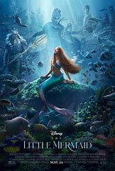
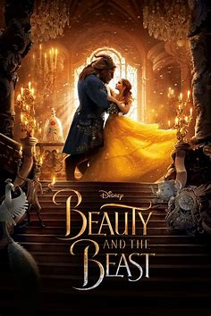

Audience Review
Nory R: I give this a 9 out of 10! No matter if it's this version or the cartoon, I will ALWAYS shed a few tears when Mufasa dies :(
Emily H: I would definitely recommend! I watch this with my kitty cat and I think it's safe to say that he too would highly rate this Disney movie!
Lezdley P: Meh, I love the cartoon but seeing this kind of freaked me out... 6 out of 10.
Critics Review
Kristen B: The Lion King is a beautiful film with stunning effects. The cinematography has visuals that make you feel like you are in Mufasa’s kingdom experiencing the adventures of Simba right alongside him.
Matthew C: While the remake does result in being an admirable visual-effects experiment, it still plays things too safe in terms of story structure.
Lynette N: The 'Lion King' is engaging, cinematically beautiful, and showcases some of the rich cultural traditions of Africa. Though at times, the CGI was a little distracting.
You might also like:
- 
- 